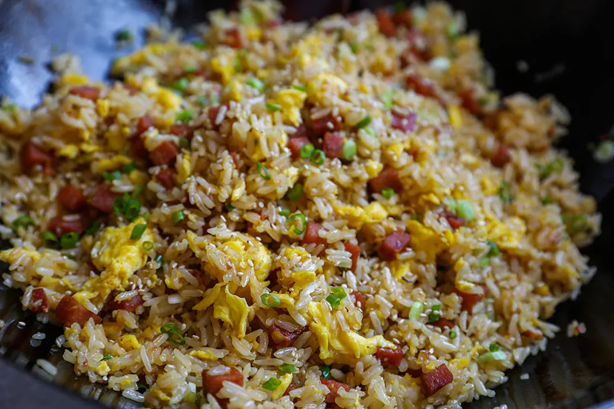

Spam Fried Rice

This Spam fried rice with egg is a quick and easy way to use up leftover rice.
In less than 20 minutes, crispy pan-fried Spam, fluffy eggs, and simple vegetables combine to create
a quick and delicious weeknight meal that the whole family will love.
Ingredients
- Oil
- Spam
- 2 eggs
- Garlic
- Green onion
- Frozen peas
- Frozen corn kernel
- Leftover rice
- For the sauce
- Soy sauce
- Oyster sauce
- Sesame oil
- Black pepper
Steps
- Mix fried rice sauce in a small bowl and set aside
- Heat a tablespoon of oil in a wok or a large skillet over med-high heat.
Add the beaten eggs and stir until they are half cooked (still slightly wet). Transfer the eggs to a plate and set aside
- Heat another tablespoon of oil, add Spam pieces and fry until they are crisp and slightly browned, about 2-3 minutes
- Add garlic, green onion and stir fry for 1 minute
- Add peas and corn and continue to fry for 30 seconds. Add rice and toss with spam and vegetables until rice grains are separated and well incorporated
- Pour the sauce over and toss well with fried rice
- Add the reserved scramble egg and continue to toss to heat through. Serve hot